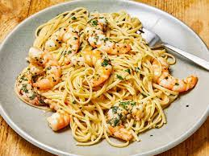

Recipes
Shrimp Scampi
Origin: Italian city of Genoa
Source: Own Recipe
Category: Main Dish
Shrimp scampi is a classic Italian-American delight, where succulent shrimp meet a medley of garlic, butter, and white wine. Sautéed to pink perfection, the shrimp mingle with a fragrant blend of garlic and red pepper flakes. A drizzle of white wine and a squeeze of lemon create a luxurious sauce, embracing the dish's linguine base. With a sprinkle of parsley, it's a harmonious, flavorful masterpiece that exemplifies both simplicity and taste.
Recipe Ingredients
- 2 tablespoons butter
- 2 tablespoons extra-virgin olive oil
- 4 garlic cloves, minced
- ½ cup dry white wine or broth
- ¾ teaspoon kosher salt, or to taste
- ⅛ teaspoon crushed red pepper flakes, or to taste
- Freshly ground black pepper
- 1¾ pounds large or extra-large shrimp, shelled
- ⅓ cup chopped parsley
- Freshly squeezed juice of half a lemon
- Cooked pasta or crusty bread
Recipe Steps
- In a large skillet, melt butter with olive oil.
- Add garlic and sauté until fragrant, about 1 minute.
- Add wine or broth, salt, red pepper flakes and plenty of black pepper and bring to a simmer.
- Let the wine reduce by half, about 2 minutes.
- Add shrimp and sauté until they just turn pink, 2 to 4 minutes depending upon their size.
- Stir in the parsley and lemon juice and serve over pasta or accompanied by crusty bread.


Matcha Cookies

Origin: Japanese
Source: https://www.justonecookbook.com/green-tea-white-chocolate-cookies/
Category: Dessert
These cookies have the perfect flavor balance of the earthiness from the matcha and the sweetness and creaminess from the white chocolate chips. They are crispy and sweet, perfect for an afternoon snack or dessert. Enjoy with a cup of tea!
Recipe Ingredients
- All purpose flour
- Matcha powder
- Unsalted butter
- Kosher salt
- Confectioners sugar
- Egg yolks
- White chocolate chips
Recipe Steps
- Combine flour and matcha powder in large bowl Sift the flour and matcha powder
- Beat softened butter until smooth and creamy
- Add salt and blend
- Add sugar and beat until soft and light
- Add egg yolks and mix until well combined
- Gradually add flour and matcha mixture and mix until well combined
- Add chocolate chips and mix until incorporated
- Divide dough into two pieces. Shape each piece into cylinders about 1.5in in diameter
- Wrap logs in plastic wrap and chill in fridge for at least two hours
- Slice into ⅓ inch rounds and place on a baking tray lined with parchment paper
- Bake at 350 degrees for 15 minutes
Additional Food images


Scrambled eggs with tomatoes

Origin: Chinese
Source: Own Recipe
Category: Main Dish
Scrambled eggs with tomatoes is a hot dish which originated from China. It is a simple and fast dish to make, but it has good nutritional value. It is a very satisfying food to eat and popularly served with rice and topped with green onions.
Recipe Ingredients
- Tomatos
- Eggs
- Salt
- Sugar
- Cooking oil
Recipe Steps
- Crack eggs into a bowl and mix until scrambled
- Cut tomatoes into pieces around the size of your thumb
- Oil a hot pan and cook the eggs until satisfied then remove the eggs
- Re-oil the pan and cook the tomatoes until they loosen
- Combine eggs and tomatoes and season with salt and sugar
Additional Food images